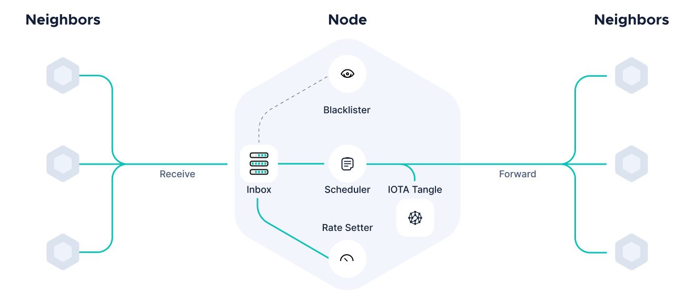

Congestion Control
Every network has to deal with its intrinsic limited resources in terms of bandwidth and node capabilities (CPU and storage). In this document, we present a congestion control algorithm to regulate the influx of messages in the network with the goal of maximizing throughput (messages/bytes per second) and minimizing delays. Furthermore, the following requirements must be satisfied:
- Consistency. If a message is written by one honest node, it shall be written by all honest nodes within some delay bound.
- Fairness. Nodes can obtain a share of the available throughput depending on their access Mana. Throughput is shared in such a way that an attempt to increase the allocation of any node necessarily results in the decrease in the allocation of some other node with an equal or smaller allocation (max-min fairness).
- Security. Malicious nodes shall be unable to interfere with either of the above requirements.

Further information can be found in the paper Access Control for Distributed Ledgers in the Internet of Things: A Networking Approach.
Detailed design
Our algorithm has three core components:
- A scheduling algorithm which ensures fair access for all nodes according to their access Mana.
- A TCP-inspired algorithm for decentralized rate setting to efficiently utilize the available bandwidth while preventing large delays.
- A blacklisting policy to ban malicious nodes.
Prerequirements
-
Node identity. We require node accountability where each message is associated with the node ID of its issuing node.
-
Access mana. The congestion control module has knowledge of the access Mana of the nodes in the network in order to fairly share the available throughput. Without access Mana the network would be subject to Sybil attacks, which would incentivise even honest actors to artificially increase its own number of nodes.
-
Timestamp. Before scheduling a new message, the scheduler verifies whether the message timestamp is valid or not.
-
Message weight. Weight of a message is used to priority messages over the others and it is calculated depending on the type of message and of the message length.
Outbox management
Once the message has successfully passed the message parser checks and is solid, it is enqueued into the outbox for scheduling. The outbox is logically split into several queues, each one corresponding to a different node issuing messages. In this section, we describe the operations of message enqueuing (and dequeuing) into (from) the outbox.
The enqueuing mechanism includes the following components:
- Classification. The mechanism identifies the queue where the message belongs to according to the node ID of the message issuer.
- Message enqueuing. The message is actually enqueued, queue is sorted by message timestamps in increasing order and counters are updated (e.g., counters for the total number of bytes in the queue).
- Message drop. In some circumstances, due to network congestion or to ongoing attacks, some messages shall be dropped to guarantee bounded delays and isolate attacker's messages. Specifically, a node shall drop messages in two situations:
- since buffers are of a limited size, if the total number of bytes in all queues exceeds a certain threshold, new incoming messages are dropped;
- to guarantee the security of the network, if a certain queue exceeds a given threshold, new incoming packets from that specific node ID will be dropped.
The dequeue mechanism includes the following components:
- Queue selection. A queue is selected according to round robin scheduling algorithm. In particular, we use a modified version of the deficit round robin (DRR) algorithm.
- Message dequeuing. The first message of the queue is dequeued, and list of active nodes is updated.
- Scheduler management. Scheduler counters and pointers are updated.
Scheduler
The most critical task is the scheduling algorithm which must guarantee that, for an honest node node, the following requirements will be met:
node's messages will not accumulate indefinitely at any node (i.e., starvation is avoided), so the consistency requirement will be ensured.node's fair share (according to its access Mana) of the network resources are allocated to it, guaranteeing the fairness requirement.- Malicious nodes sending above their allowed rate will not interrupt
node's throughput, fulfilling the security requirement.
Although nodes in our setting are capable of more complex and customised behaviour than a typical router in a packet-switched network, our scheduler must still be lightweight and scalable due to the potentially large number of nodes requiring differentiated treatment. It is estimated that over 10,000 nodes operate on the Bitcoin network, and we expect that an even greater number of nodes are likely to be present in the IoT setting. For this reason, we adopt a scheduler based on Deficit Round Robin (DRR) (the Linux implementation of the FQ-CoDel packet scheduler, which is based on DRR, supports anywhere up to 65535 separate queues).
The DRR scans all non-empty queues in sequence. When a non-empty queue is selected, its priority counter (called deficit) is incremented by a certain value (called quantum). Then, the value of the deficit counter is a maximal amount of bytes that can be sent at this turn: if the deficit counter is greater than the weight of the message at the head of the queue, this message can be scheduled and the value of the counter is decremented by this weight. In our implementation, the quantum is proportional to node's access Mana and we add a cap on the maximum deficit that a node can achieve to keep the network latency low. It is also important to mention that the weight of the message can be assigned in such a way that specific messages can be prioritized (low weight) or penalized (large weight); by default, in our mechanism the weight is proportional to the message size measured in bytes. The weight of a message is set by the function WorkCalculator().
Here a fundamental remark: the network manager sets up a desired maximum (fixed) rate SCHEDULING_RATE at which messages will be scheduled, computed in weight (see above) per second. This implies that every message is scheduled after a delay which is equal to the weight (size as default) of the latest scheduled message times the parameter SCHEDULING_RATE. This rate mostly depends on the degree of decentralization desired: e.g., a larger rate leads to higher throughput but would leave behind slower devices which will fall out of sync.
Rate setting
If all nodes always had messages to issue, i.e., if nodes were continuously willing to issue new messages, the problem of rate setting would be very straightforward: nodes could simply operate at a fixed, assured rate, sharing the total throughput according to the percentage of access Mana owned. The scheduling algorithm would ensure that this rate is enforceable, and that increasing delays or dropped messages are only experienced by misbehaving node. However, it is unrealistic that all nodes will always have messages to issue, and we would like nodes to better utilise network resources, without causing excessive congestion and violating any requirement.
We propose a rate setting algorithm inspired by TCP — each node employs additive increase, multiplicative decrease (AIMD) rules to update their issuance rate in response to congestion events. In the case of distributed ledgers, all message traffic passes through all nodes, contrary to the case of traffic typically found in packet switched networks and other traditional network architectures. Under these conditions, local congestion at a node is all that is required to indicate congestion elsewhere in the network. This observation is crucial, as it presents an opportunity for a congestion control algorithm based entirely on local traffic.
Our rate setting algorithm outlines the AIMD rules employed by each node to set their issuance rate. Rate updates for a node node take place each time a new message is scheduled if the node has a non-empty set of its own messages not yet scheduled. Node node sets its own local additive-increase variable localIncrease(node) based on its access Mana and on a global increase rate parameter RATE_SETTING_INCREASE. An appropriate choice of RATE_SETTING_INCREASE ensures a conservative global increase rate which does not cause problems even when many nodes increase their rate simultaneously. Nodes wait RATE_SETTING_PAUSE seconds after a global multiplicative decrease parameter RATE_SETTING_DECREASE, during which there are no further updates made, to allow the reduced rate to take effect and prevent multiple successive decreases. At each update, node checks how many of its own messages are in its outbox queue, and responds with a multiplicative decrease if this number is above a threshold, backoff(node), which is proportional to node's access Mana. If the number of node's messages in the outbox is below the threshold, node's issuance rate is incremented by its local increase variable localIncrease(node).
Message blocking and blacklisting
If an incoming message made the outbox total buffer size to exceed its maximum capacity MAX_BUFFER, the same message would be dropped. In our analysis, we set buffers to be large enough to accommodate traffic from all honest nodes.
Furthermore, to mitigate spamming actions from malicious nodes, we add an additional constraint: if node's access Mana-scaled queue length (i.e., queue length divided by node's access Mana) exceeds a given threshold MAX_QUEUE, any new incoming packet from node will be dropped, hence the node is blacklisted. The attacker is blacklisted for a certain time BLACKLIST_TIME during which no messages issued by node can be added to the outbox. Please note that it is still possible to receive message from the attacker through solidification requests, which is important in order to guarantee the consistency requirement. Finally, when a node is blacklisted, the blacklister does not increase its own rate for a time RATE_SETTING_QUARANTINE, to avoid errors in the perception of the current congestion level.